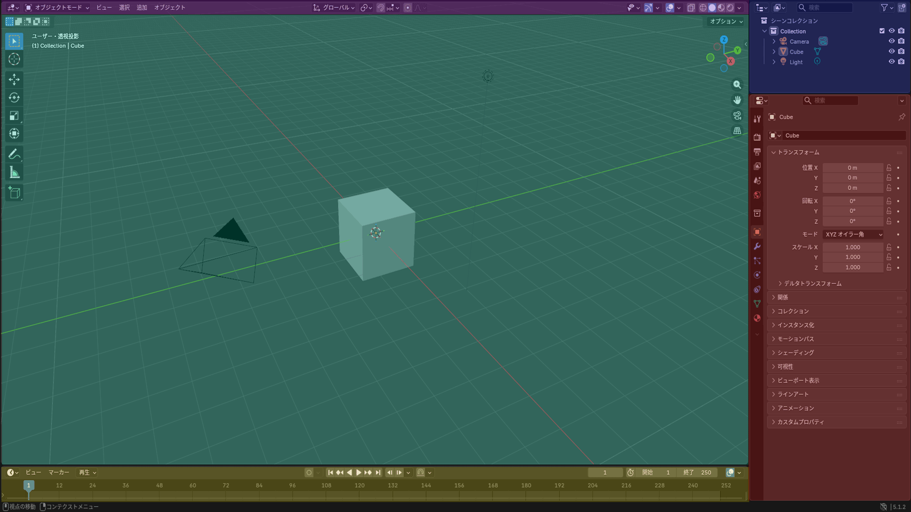

- 紫：トップバー
- 青：アウトライナー
- 緑：3Dビュー
- 黄：タイムライン
- 赤：プロパティ

➀ 視点の回転
・マウスの中ボタンを押したままマウスを動かすと、視点を回転させることができます。
➁ 視点の移動
・shift＋マウスの中ボタンで、視点を平行に移動させることができます。
➂ ズーム・ズームアウト
・マウスホイールを回すと、ズーム＆ズームアウトができます。
➃ オブジェクトの削除と追加：「削除」
・デフォルトでは最初に、立方体のオブジェクトが表示されています。この立方体を削除するときは、Xキーを押して「削除」を選択します。
➃ オブジェクトの削除と追加：「追加」
・新しくオブジェクトを追加するときは上の「追加」から「メッシュ」を選択し、その中にある立方体などを選択しましょう。 ショートカットキーは「shift＋A」です。
➄ 移動・回転・拡大・縮小：「移動」
・オブジェクトを移動させたい時はGキーを押すことで移動させることができます。 またGキーを押した後に、X、Y、を押すと、その方向に固定して移動できます。
軸固定移動の手順:
➄ 移動・回転・拡大・縮小：「回転」
・オブジェクトを回転させたい時はRキーを押すことで回転させることができます。 またRキーを押した後に、X、Y、Zを押すと、その軸を固定して回転させることが できます。
軸固定回転の手順:
➄ 移動・回転・拡大・縮小：「拡大・縮小」
・オブジェクトを拡大、縮小させたいときはSキーを押すことで拡大,縮小させる ことができます。またSキーを押した後に、X、Y、Zを押すと、その方向に拡大、 縮小させることができます。
軸固定拡大・縮小の手順: